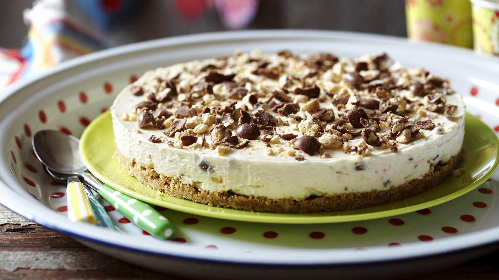

Cheesecake

Description
When you just don't have the energy to mess about with baking, an easy
cheesecake is a make-ahead wonder. You can swap in all kinds of toppings
for this cheesecake - fresh berries, chocolate biscuits, a shop-bought
fruit compote, or other chopped up chocolate bars.
Ingredients
- 200g/7oz digestive biscuits
- 75g/2½ oz unsalted butter
- 400g/14oz full-fat cream cheese, at room temperature
- 300g/10½ oz mascarpone, at room temperature
- 200g/7oz icing sugar, sifted
- 1 tsp vanilla extract
- 100g/3½oz malted milk balls (optional)
Steps
-
Place the digestive biscuits into a sealable freezer bag. Push all the
air out and seal the bag. Crush the biscuits with a rolling pin, being
careful not to break any holes in the bag.
-
Melt the butter in a large saucepan. Tip the biscuit crumbs into the
butter and mix well until thoroughly combined. Press the buttery crumbs
into the bottom of a 23cm/9in springform or loose-bottomed tin. Chill in
the refrigerator while you make the topping.
-
Combine the cream cheese and mascarpone in a large mixing bowl. Using an
electric handheld mixer, blend the cheeses together until light and
fluffy. Add the icing sugar a little at a time and blend to incorporate.
Finally, mix in the vanilla. The mixture should be very light and
fluffy.
-
Place the malted milk balls in the sealable freezer bag and close. Knock
the malted milk balls with a rolling pin to just break them apart. Fold
half of the crushed malted milk balls into the cream cheese mixture
until thoroughly combined.
-
Spread the cream cheese mixture over the biscuit base and smooth the top
with a palette knife or spatula. Cover with cling film and chill in the
fridge for at least four hours.
-
When ready to serve, sprinkle the remaining crushed malted milk balls
over the top of the cheesecake. Release the catch of the springform tin
carefully, then slice and serve.